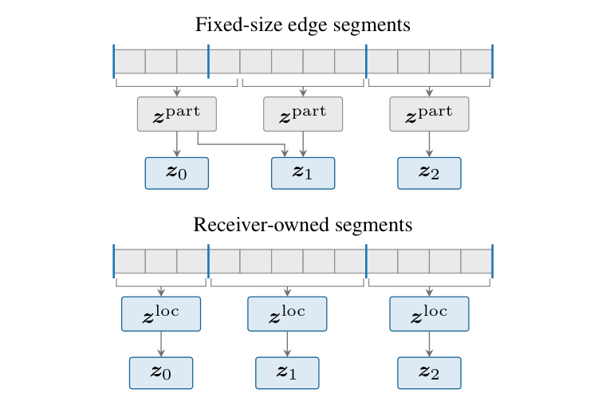
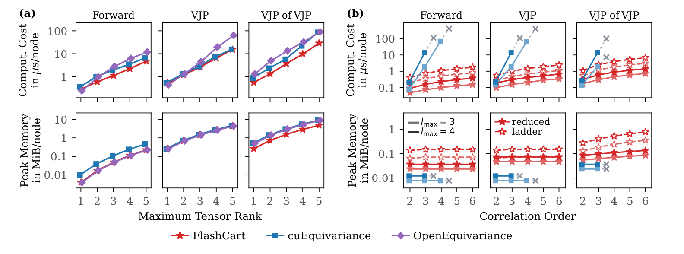
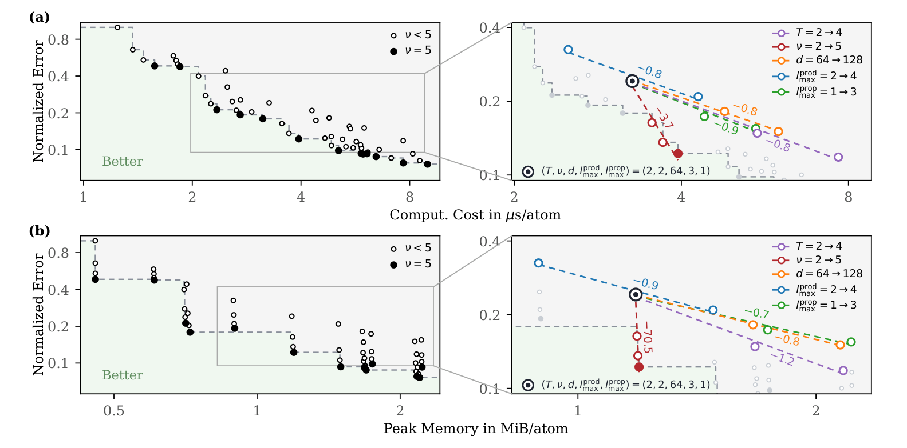
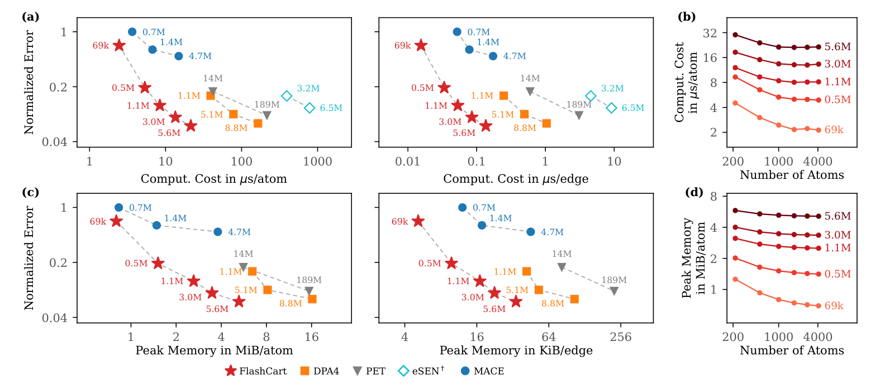

FlashCart：让等变原子势负担得起高阶局域关联
论文原文 ↗论文：FlashCart: Fast Cartesian Tensor Products for Equivariant Interatomic Potentials，Viktor Zaverkin、Payman Goodarzi 等，2026。arXiv｜
精度为何会受特征计算成本限制
机器学习原子间势把原子位置和元素转换成能量与力，使原子模拟能够覆盖电子结构方法难以达到的尺度。但模拟需要反复求值，模型内部的成本也很关键。等变模型为了表达原子邻域的角向关系，反复组合向量和张量特征；关联越复杂，耦合路径与中间数组越多，计算成本往往限制了实际能使用的关联阶数。
FlashCart 将计算实现与模型架构一起改造：用独立笛卡尔分量生成专用 GPU 内核，降低每次张量乘积的成本；再递归构建高阶特征，每一级都压缩到固定宽度，控制连续组合的规模。作者由此把高阶局域关联变成一种经济的精度提升方式，并比较它与加宽、加深和提高张量秩的效果。
从原子构型到能量与力
等变指构型旋转时，内部向量和张量按相应规则旋转，最终能量保持不变、力随构型旋转。张量秩描述方向表示的等级；通道数表示同类方向特征的多个可学习副本，即网络宽度；关联阶数则描述同一局域基底参与连续组合的次数。这三个维度分别控制方向表示、特征容量和邻域关系的组合深度。
模型输入是元素种类、原子位置和周期晶胞。程序先在截断半径内建立邻居边：距离进入径向网络产生权重，单位方向形成笛卡尔张量。随后把邻居特征与方向张量耦合，按距离加权并对邻居求和，再经过可学习混合、归一化及非线性门控，得到中心原子的局域基底 A。
关联阶梯从 A 出发：上一阶特征再次与 A 相乘，就形成更高一级关联；每次乘积后，通过线性映射把耦合路径和通道混合，压回固定宽度。不同阶数的结果共同进入输出。固定最大张量秩和宽度后，每升一级只增加一次乘积及映射，计算随关联阶数近似线性增长。
消息传递块进一步让信息跨邻居传播，最终只读取标量，得到逐原子能量并求和为总能量。力由总能量对坐标的负梯度得到。模型以参考能量和力训练，使用时从新构型直接求值。训练力损失还要对求力过程再次求导，因此加速前向、一阶反向与二阶反向计算都有实际价值。
独立笛卡尔分量怎样进入专用 GPU 内核
一个完整 l 秩笛卡尔数组有 3ˡ 个分量，但对称无迹张量只需 2l+1 个独立分量。例如二秩张量可存 xx、xy、xz、yy、yz，再由迹为零的关系恢复 zz。作者在编译前把合法张量乘积写成这些独立分量的多项式，进行符号化简并推导导数，再生成 Triton GPU 内核。运行时直接处理紧凑表示，减少冗余计算、中间数组和显存往返。
邻居求和也与乘积融合。作者按接收原子排序边，让一个程序处理同一中心原子的全部入边，在本地累加后一次写出。这减少了先存储整批边消息、再做归并的开销。

原图 Fig.2。上方按固定长度分段，可能把同一原子的求和拆开；下方按接收原子归属分段，直接完成该原子的邻居累加。
高阶关联怎样变得可负担
作者先测计算内核的时间与显存。边卷积中，FlashCart 对 cuEquivariance 的前向和二阶反向平均加速为 1.6 和 1.9 倍；相对于 OpenEquivariance，为 1.9 和 3.1 倍。高阶局域计算通过固定宽度递推进一步控制中间特征，其成本随阶数的增长更平缓。

原图 Fig.3。a 为邻居边卷积，b 为原子局域高阶乘积；各列比较前向、一阶反向和二阶反向，上排为时间，下排为额外显存。最大张量秩和关联阶数分别作为横轴。
在固定 5.6M 参数检查点、两边均开启编译的同模型比较中，用生成内核替代 PyTorch 张量乘积和边卷积，能量与力推理从 175.5 降到 21.5 μs/atom，快 8.2 倍；训练计算从 442.6 降到 82.2 μs/atom，快 5.4 倍。这个比较直接展示了实现层优化怎样作用于完整模型。
第二项比较把相同预算用于不同架构维度。作者在 SPICE-MACE-OFF 上训练 52 种配置，分别增加层数、宽度、张量秩或关联阶数。在其余架构相同的配置中，从二阶升至五阶，综合误差下降 19%–60%，求值时间只增加 4%–37%，峰值显存增加最多 1.7%。综合误差把能量和力的归一化 MAE 等权合并，用于观察精度与成本的折中。

原图 Fig.4。越靠左下表示成本和误差同时更低；右侧放大比较从同一基准出发，升关联阶数、加深、加宽及升张量秩的路径。实心点为五阶关联模型。
作者还固定参数量约 0.93M，在升阶时减小宽度。五阶、64 通道模型的力 MAE 为 8.29 meV/Å，时间 3.94 μs/atom；二阶、108 通道模型为 11.53 meV/Å、5.49 μs/atom。把参数分配给更高局域关联，在这组比较中同时改善精度和速度。
完整原子势推进精度—效率前沿
SPICE-MACE-OFF 覆盖十种元素的中性分子。FlashCart 最大模型有 5.6M 参数，七个测试子集等权平均的能量 MAE 为 0.072 meV/atom，力 MAE 为 1.99 meV/Å。相较 188.9M 参数的 PET-L，后者分别为 0.106 和 2.52，FlashCart 两项误差都更低；以金刚石体系测量能量与力求值，时间为 21.5 对 215.7 μs/atom，约快十倍。

原图 Fig.1。a、c 将分子测试误差与求值时间、显存比较，红星为 FlashCart；b、d 展示时间和显存随体系大小的变化。模型旁数字为参数量，位置越靠左下表示更好的精度—成本折中。
在覆盖 85 种元素的 MAD 数据及跨体系测试中，2.3M 参数 FlashCart 也改善了相对于 PET-MAD 的整体误差。这使方法从分子基准延伸到更广的材料环境。
FlashCart 的贡献是把“高阶特征表达能力”与“实际运行成本”同时设计：独立分量提供紧凑表示，符号导数与融合内核加快力训练，固定宽度递推让连续升阶可控。论文给出的架构结论很具体——原子势提高精度时，增加局域关联阶数可以比单纯堆宽度或深度更高效。
原始摘要完整中文翻译
机器学习原子间势将原子尺度模拟扩展到电子结构方法所能达到的长度和时间尺度之外。然而，等变架构的计算成本限制了它们在实践中能够表示的局域关联，进而限制了其可达到的精度。在这里，我们提出FlashCart：它将自动生成的GPU内核与一种递归构建等变特征、并在每一步将这些特征压缩到固定宽度的架构相结合，使高阶关联的计算成本变得可承受。我们用独立笛卡尔分量表达张量乘积，对这些乘积及其导数进行符号化简，生成融合内核；这些内核的性能往往优于经过优化的球面对应实现。随后，我们表明，提高关联阶数比增加宽度、深度或张量秩更能高效地改善精度。在SPICE-MACE-OFF上，FlashCart模型推进了实测的精度—效率前沿：一个具有560万参数的模型，相比具有1.89亿参数的Transformer，取得了更低的能量与力误差，并将推理速度提高到其10倍。